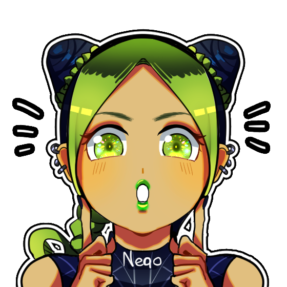

Neqo Chwan
Artist
Hi, I'm Neqo
I’m a freelance illustrator/digital artist from Argentina. Most of my content are fan art but I enjoy creating stories of my own, as well character design and concept art.
Social Media
English & Spanish
Buenos Aires - Argentina
2001